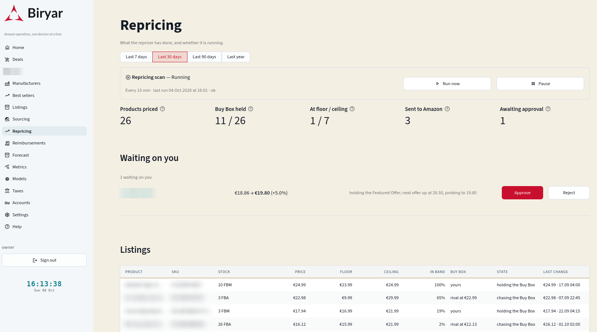

Every fifteen minutes Biryar decides the price of each product the business sells on Amazon. This report explains how that decision is made, why a learned pricing agent was taken out of charge after one day, and why the replacement asks what situation it is in before it asks what price to choose.
The first repricer in Biryar was a reinforcement-learning agent, a neural policy trained with Proximal Policy Optimisation [1] inside a simulated market. It went live on a Sunday morning with twenty-two listings to manage. This is what the logs record.
Nothing was wrong with the training. The agent learned the market it was shown with great fidelity. It was shown the wrong market, and it was asked to cover situations in which the information it relied on simply did not exist. The rest of this report is about the policy built from that lesson, which robotics researchers would recognise as a gap between simulation and reality [2], and which pricing researchers would recognise as the danger of optimising against a demand model that was never estimated from data [3].
On Amazon many sellers often offer the same product on the same page. Amazon places one of those offers behind the main purchase button, an arrangement it calls the Featured Offer and that sellers call the Buy Box. Most shoppers never look further, so the offer in that position takes almost all the sales and the others take very few. It is usually, but not always, the cheapest offer. Delivery speed, the seller's record and the fulfilment channel matter too, and algorithmic sellers win it more often than others [4].
That makes the economics of a price unusually clear. The expected profit of setting a price is the chance of holding the Featured Offer at that price, times the demand the listing has, times the margin the price leaves.
A good repricer therefore does three things. It never sets a price whose margin is negative. It moves the price in the direction that wins or keeps the Featured Offer when that is worth doing. And it does not move at all when it lacks the information to know which direction that is. The first version did none of the three reliably. The current one is built in eight layers, each answering one question, and a single fifteen-minute pass goes through all of them in order.
A policy can only be as good as the facts it is handed. The most instructive bugs in this agent were all of one kind. A number was read from a source that looked right and described something slightly different. Table 1 lists the facts the policy sees and, beside each, the plausible source that turned out to be wrong.
| Fact | Read from | The wrong twin | What the twin caused |
|---|---|---|---|
| Our current price | The offer Amazon actually publishes to buyers | The price field of our own last submission | "Twelve of twelve applied" while every buyer still saw the old prices |
| Competing offers | Every offer on the listing except our own | All offers, ours included | The agent reads its own price as the market and undercuts itself |
| Sales rate | Recorded sales, with the length of history attached | A rate without its age | Two days of silence treated as a measured zero |
| Stock | Whichever interface can see the fulfilment channel | One report for both channels | Every warehouse-held listing read as empty |
| Floor and ceiling | The seller's own bounds, re-read every pass | A percentage of a base price the agent is itself moving | A clamp that drifts with the thing it is meant to hold |
The last sentence of the caption carries a design rule. When the agent cannot read a listing's published price or bounds, it does not fill the gap with yesterday's value or a sensible guess. It skips the listing until the next pass, because a guessed number handed to a pricing rule becomes a decision. The managed catalogue itself is kept equal to what the account actually lists. A scheduled job mirrors every active listing that carries a seller-set minimum and maximum, re-reads those bounds every six hours, and drops listings that have disappeared, so a new listing is priced within a quarter of an hour of its first units arriving rather than after someone remembers to register it.
The core insight of the redesign is that a listing can be in one of a few situations that do not share a signal, and that a single learned function was being asked to cover all of them. If competitors exist and someone else holds the Featured Offer, the price that matters is theirs. If we hold it, the price that matters is the next offer above ours, and the thing to protect is the position. If nobody else sells the product, there is no competitor price at all, and a rule built around competitor prices is choosing blind. And sometimes there is not enough information to act, in which case the right move is no move. The policy therefore decides the case first, explicitly, as Figure 1 shows.
Chasing Someone else holds the Featured Offer and we are priced above it. The target is one cent below their price. A cent is enough to take the position and costs nothing extra, whereas a percentage would give away margin in proportion to the price for no additional chance of winning. Two conditions stop the chase. If winning would require a price below our floor, the offer is not winnable at a profit and the price holds. And if the listing has been watched for fourteen days without a single sale, winning the position on a product nobody buys would win nothing, so the price holds there too. Fourteen days, not one, because a newly listed product has no sales either, and cutting to win the position is exactly how a new listing gets its first.
Outranked We are already cheaper than the Featured Offer and still do not hold it. Being cheaper has failed to win it, so cutting further buys nothing. Amazon is choosing on something other than price. Raising towards the holder's price would capture margin, but only on the inference that price is irrelevant here, which has not been observed. By default the policy holds, and the option to raise exists but is off.
Holding We hold the Featured Offer. The policy probes upward, but never past one cent below the next offer above ours, because crossing it is how the position is lost. With no offer above at all, the ceiling and the step limit are the only bounds.
Sole seller Nobody else offers the product. There is no competitor price, so the policy steers by sell-through against a stock plan, the rate that would clear the units on hand in twelve weeks. Selling well above that rate leaves money on the table and the price rises. Selling well below it means stock will age, and the price falls. Within half the target either way the price holds, a deliberately wide dead band, because a sales rate measured on a slow catalogue is noisy and a controller that chases noise oscillates [5]. This is the only case in which a price rises on strength alone, and it requires at least a week of sales history.
Unknown Bounds are missing, stock is zero, competitors exist but none is priced, or there is too little history. The price holds and the reason is recorded.
Each case produces not a price but a band, the envelope, and a point inside it where the deterministic rule would sit. Every band is intersected with two limits that no case can widen. The price may not move more than five percent in one decision, and it may not leave the interval between the floor and the seller's ceiling. Figure 2 draws two envelopes on the same price axis.
The envelope is where learning is allowed back in. A learned component can choose where inside the band to sit, but whatever it returns is clamped into the band before use, so a model that has never seen a listing, or has gone wrong, costs accuracy and not money. The safe reinforcement learning literature calls this arrangement a shield, a fixed layer that sits between a learning agent and the world and blocks actions that would violate a specification [6, 7]. Here the specification is economic rather than physical, never below cost, never past the next rival when holding, never more than five percent at a time, and the shield is the part of the system that cannot be retrained into something else.
The five percent limit has a story of its own. The original agent applied changes as percentages of a price it believed was current. A clamp on the step size bounds the damage of any single bad decision and stops compounding, but as Layer 5 shows, it does not by itself bound a day.
The floor is the one number in the system that no case, signal or model may cross. It is the higher of two values. The first is the seller's own minimum, set on each listing in Seller Central, which Amazon itself refuses to publish below, including from its own automated pricing tools. The second is the break-even price that Biryar computes.
The fee line is fitted from two live estimates of Amazon's fees at two different prices for the same product, rather than from a remembered percentage, because referral rates have lower bands for cheap items in some categories and fulfilment fees depend on each product's measured size. Two points determine a line exactly. When Amazon's fee service fails to answer, which it does unpredictably, a fee measured on an earlier run is preferred over a generic fallback, on the principle that a floor which has once been measured should not quietly become a guess. When a floor is written onto a listing, it sits three percent above break-even, so that a rounding difference or a fee revision cannot silently turn a break-even sale into a loss.
Cost is the one fact Amazon does not know. Invoices are read and keyed by barcode, the only identifier that appears on the invoice, the box and the listing alike. When the same product has been bought twice at different prices, the higher cost is used, because once both batches share a bin in Amazon's warehouse they are indistinguishable and a floor computed from the cheaper batch would sell the dearer one at a loss. Where no invoice is on file, the cost is derived from the seller's own floor minus estimated fees. That is an upper bound on what the goods cost, which errs in the safe direction, and the system records the derivation beside the number. Of the 26 listings currently managed, 22 carry such a derived cost, and for nine of them the computed break-even sits above the seller's own minimum, so the break-even is the floor that binds.
The floor is enforced in two places, deliberately. Amazon enforces the seller's minimum on its side, and Biryar refuses to submit any price below its recorded floor before the request is sent. A guard on one side only stops working the moment the other side changes.
Biryar's safety rules require the owner's approval for any repricer move larger than fifteen percent. That rule was written for an agent whose steps were unbounded. Once the envelope capped every step at five percent, a single decision could never reach fifteen, and the rule became unreachable. A lower threshold became a coin toss instead, because a clamped step lands exactly on its limit and rounding to the cent decided which side of the comparison it fell on. On the first live pass, nine nearly identical decisions were split between automatic submission and approval for no reason a reader could give.
What can actually run away is the day. Five percent a pass, ninety-six passes a day, is a price anywhere at all. So the approval gate measures how far each listing has moved from its first published price of the current day, however many steps it took. Once that drift reaches ten percent, the next move waits in the approval queue. Once it reaches fifteen percent, only the owner may approve it. The single-step thresholds remain beside the daily one, eight percent for an approval and fifteen for the owner. The five percent clamp makes them unreachable in normal operation, but they cost nothing and still bound a learned chooser that returns something wild.
Approvals behave like the rest of Biryar's approval queue, described in a later report. A pending price change carries its evidence, can be approved or rejected in the web interface, and expires if the market moves on before anyone decides. Since 7 September the gate has raised 233 price approvals. Thirty-four were approved, 68 rejected, one is pending and 130 expired unanswered, which is harmless by design, since an unapproved move simply does not happen.
Submitting a price to Amazon sounds like the simplest step. It turned out to hold the most dangerous bug in the project. The pricing bot shipped with a writer that replaced the whole offer attribute on a listing with a new value containing only the price. The seller's minimum and maximum live inside that same attribute, so the first successful write would have deleted both, on every listing, and left a percentage clamp computed from a moving base price as the only protection. The current writer reads the listing's existing offer, changes only the price, and sends everything else back exactly as it was. Whatever the seller set is preserved because it is never rebuilt from assumptions.
Three further guards sit in the writer. A price is verified only against the published offer, never against the submission, since reading back one's own submission always agrees with it. A listing whose last submission has not yet appeared, and is recent enough to still be in transit, is skipped on the next pass, which is what stopped the triple submissions of the cold open. And the target marketplace comes from configuration rather than from an environment value that, read naively, would have sent every change to the American marketplace instead of the German one. Some product types, two DVD listings among them, are rejected by Amazon as the envelope of a price update even though Amazon publishes definitions for them, and the writer reports those as refused rather than as submitted. Nineteen decisions so far have ended as refusals of one kind or another, each logged with its reason.
The live repricer runs with its dry-run setting switched off, on the owner's explicit instruction. Everything above is what makes that acceptable.
When the envelope policy first went live, it recorded its reasoning nowhere. The previous agent's loop had logged every decision, and the replacement loop did not inherit that, so for a short time the learning machinery described in Layer 8 had no input at all and the price-history chart in the web interface slowly emptied. A journal now records every decision, one row in the repricing table and one in the platform's prediction log, with the case, the band, the reason in plain words, the competitor prices, whether we held the Featured Offer, the sales rate and its age, and the cost the decision was made against.
Decisions to hold are recorded too. A policy that declines to move is making a claim, that the current price is right, and the holds are the control group against which any move means something. A training set made only of changes cannot answer whether doing nothing would have been better.
By case, 39 percent of decisions found the account holding, 36 percent chasing, 20 percent outranked and 5 percent unknown. The sole seller case appeared four times. Every outranked decision held, as designed, and most chasing decisions held too, either because the step had already reached the target or because the floor or the quiet rule stopped the chase.
The obvious way to judge a price decision is by the sales that followed it, and the system still derives that label. Each decision is labelled once a week has passed with the units sold and the margin earned, judged against the cost the decision was made with rather than a cost learned later. But on this account the label is almost always zero. Fewer than one decision in two thousand was followed by a sale within the window. A model fitted to that learns to predict zero, and a policy trained on it learns nothing about price.
The same records carry a second outcome that is neither rare nor slow. Every decision records whether we held the Featured Offer, and the next scan of the same listing, fifteen minutes later, records whether we hold it then. Pairing the two grades each decision by its consequence. If this price is published now, will we hold the Featured Offer at the next observation? The answer is positive in about 42 percent of cases, it resolves in minutes, and by the equation at the start of this report it is precisely the term that has to be learned from the account's own behaviour.
A gradient-boosted classifier [10] is trained on these pairs to predict that probability from our price relative to the cheapest rival and to the current holder, the gap in euros, the number of rivals and how many undercut us, whether we already held the position, our price relative to our floor, stock, and the hour of day. Two choices follow the platform's rules for any probability that will be multiplied by money. Validation is temporal, four folds that always train on the past and score on the future, since a random split would let the model see tomorrow's market while being graded on today's. And calibration is reported beside discrimination, because a model that ranks correctly while claiming ninety percent for a sixty percent event would price with false confidence.
The two baselines in Figure 4 say what the model has actually learned. Whether we held the position fifteen minutes ago is by itself an excellent predictor, because the Featured Offer is sticky. Price features alone do almost as well. The model combines both and improves on each. Including the previous holder was a deliberate choice. The policy knows it at decision time, and hiding a legitimate predictor to make the price effect look larger would be fitting the story rather than the market.
The model's honest limit is stated in its own documentation. The training data come from a deterministic rule whose price is almost a function of the rival's price, so price and rival price are close to collinear, and the model is only valid on the combinations that rule actually visited. It predicts well and cannot answer what would happen at a price two cents lower outside that support, which in causal-inference terms is a failure of positivity [12]. More months of the same data will not fix that. Deliberate variation will, a small randomised jitter inside the band the envelope already computes, which is the classic remedy for learning demand while pricing [3, 13].
The model ships in shadow. It runs beside the rule, its predictions are logged, and it changes no price. Promotion to a role in pricing is, like every model in Biryar, the owner's decision after the shadow has shown it would have done better, and the report on model operations describes how that comparison works.
The figure that matters most for the business is how often its offers hold the Featured Offer, since that is where the sales are. Figure 5 shows the daily share of checks in which the account held it.
The honest reading is modest. The share rose from about a third to over forty percent and has stayed there. The policy that produced that change never once crossed a floor, never moved a price more than five percent in a step, and asked for permission whenever a day's drift exceeded its threshold. Whether the rise was caused by the policy or by changes in the catalogue and the competition cannot be separated from these data alone, which is one more argument for the deliberate price variation described in Layer 8. What the data do show clearly is the absence of the failure that started this report. There has been no runaway price since 7 September.
